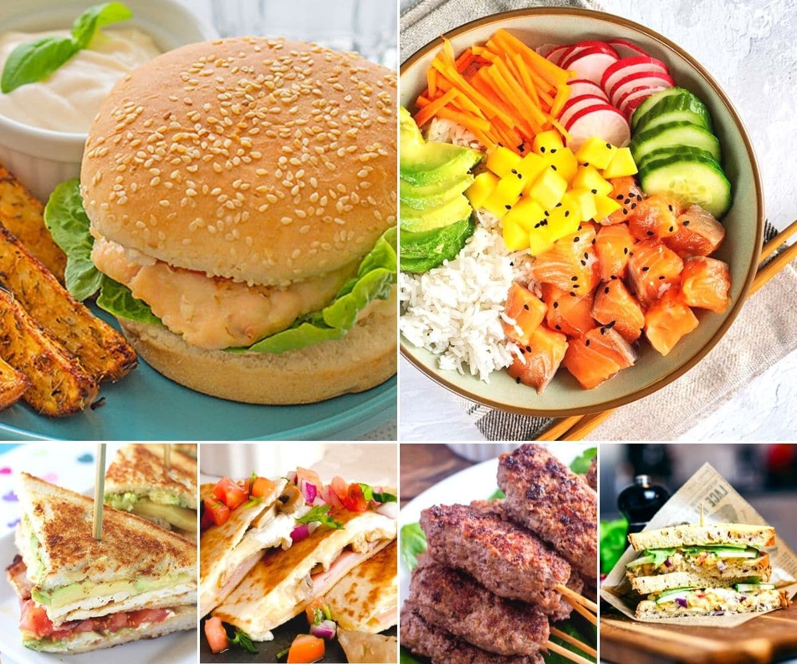

Comidas favoritas

Me encantan mis comidas favoritas porque son deliciosas,
me hacen sentir feliz y me recuerdan a momentos especiales.
Una de ellas es el puchero, que siempre comparto con mi familia los fines de semana.
Lista de comidas favoritas:
- Puchero
- Milanesa con puré
- Sopa paraguaya
- Pizza
Pasos para preparar el puchero:
- Cortar la carne y las verduras.
- Poner la carne a hervir con sal y condimentos.
- Agregar las verduras cuando la carne esté blanda.
- Cocinar todo junto hasta que esté listo.
- Servir bien caliente y disfrutar en familia.